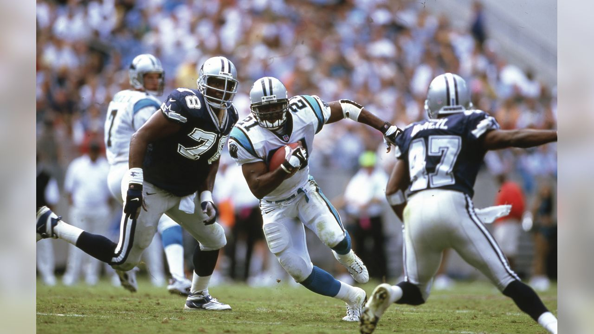
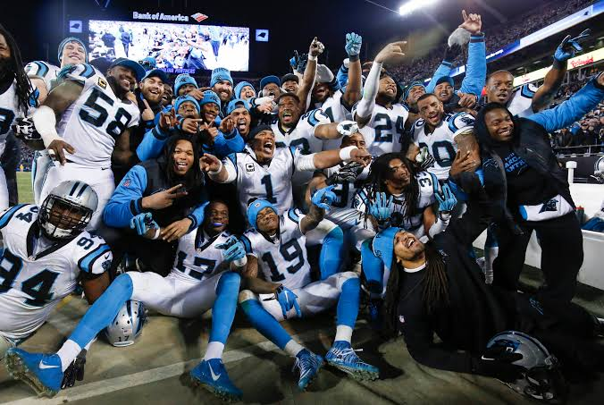

Carolina Panthers History
Explore the history, memorable seasons, and legendary players that helped shape the Carolina Panthers.
1993-2009
The Carolina Panthers were awarded an NFL franchise in 1993 and began playing during the 1995 NFL season. The team was founded by Jerry Richardson and represented both North Carolina and South Carolina. The Panthers played their first season at Memorial Stadium in Clemson, South Carolina, before moving to their permanent stadium in Charlotte, North Carolina.
Carolina quickly became competitive and reached the NFC Championship Game during the 1996 season. The Panthers continued building their identity throughout the 2000s with players such as Steve Smith, Julius Peppers, Jake Delhomme, and Muhsin Muhammad. During the 2003 season, Carolina won the NFC Championship and advanced to Super Bowl XXXVIII, where they faced the New England Patriots.

2010's
The 2010s became another important era in Carolina Panthers history. Carolina selected quarterback Cam Newton with the first overall pick in the 2011 NFL Draft. Newton became one of the most recognizable players in franchise history and helped lead a Panthers offense that featured players such as Greg Olsen and Jonathan Stewart.
The Panthers reached their greatest success of the decade during the 2015 season. Carolina finished the regular season with a 15-1 record, won the NFC Championship, and advanced to Super Bowl 50. The team was also known for a strong defense led by players such as Luke Kuechly and Thomas Davis. The success of this era created many memorable moments for Panthers fans and became an important part of the team's history.
